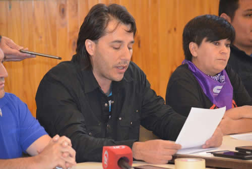

Real Chubut - Agencia de Noticias


Se conformó la Mesa de Unidad Sindical de Chubut y se pronunciaron contra los proyectos de reforma del gobierno

La CGT VIRCH y Puerto Madryn, representada por su secretario general Luis Núñez, la CTA de los Trabajadores de Chubut, con su secretario general Tomás Montenegro, la CTA Autónoma de Chubut, representada por su secretaria general Claudia Barrionuevo, y la CGT Saúl Ubaldini Comodoro Rivadavia, a través de su secretario general Gustavo Fita, conforman la Mesa de Unidad Sindical de Chubut, invitando al resto de organizaciones a orientar caminos de unidad en cada ciudad o regional.
Desde esta Mesa de Unidad, expresamos nuestro absoluto rechazo a las reformas Laboral, Fiscal, Previsional y Educativa que intenta imponernos el oficialismo, ya que estas iniciativas van en contra de los trabajadores y trabajadoras, y representan un ataque brutal hacia el conjunto del pueblo.
Con este intento de reaccionarias reformas, que atentan contra los más elementales derechos laborales, económicos, sociales y políticos de nuestro pueblo, el gobierno de Macri intenta derribar conquistas que le pertenecen a todos los argentinos y argentinas, que fijaban un piso de derechos y garantías, tal como lo establece nuestra propia Constitución Nacional.
Más allá de sus mentiras, estos proyectos sólo pretenden asegurar beneficios a los grandes empresarios, y garantizar el pago de intereses de una deuda externa ilegítima y en vertiginoso crecimiento. Para ello pretenden robarles los recursos y derechos a los jubilados, a los trabajadores con o sin empleo formal, a los pobres, y hasta al propio estado.
No cabe duda que las tres iniciativas están vinculadas. La reforma tributaria se complementa con la reforma previsional, con el resultado de una brutal reducción de los recursos del sistema de seguridad social, de las remuneraciones de los jubilados, y la caída de la asignación universal por hijo y las asignaciones familiares y sociales mediante la modificación de su fórmula de actualización. A la vez sube la edad jubilatoria, mientras las grandes empresas pagaran menos cargas patronales. Ese aumento de edad jubilatoria, además de atentar contra la vida de nuestros trabajadores mayores, incrementará el desempleo de manera inmediata, profundizando la buscada división de nuestra clase obrera.
Denunciamos que el gobierno provincial viene aceptando estas políticas, haciéndose cómplice de las mismas. La firma del llamado “pacto fiscal”, supone la renuncia a millones de pesos que le correspondían a nuestro pueblo, y eso impactará en miles de puestos de trabajo y subsidios a trabajadores despedidos, tal como ya se está reflejando en diversas noticias en todo el territorio de Chubut.
Llamamos la atención que esta actitud contradice el mandato expresado en las urnas por el 70 % del electorado chubutense, que apoyó con su voto a diferentes expresiones políticas que, con sus lógicas diferencias, coincidían en la no aceptación de las políticas implementadas por el gobierno nacional y la defensa de los intereses de la provincia y sus habitantes.
Asimismo enfrentamos la avanzada represiva del gobierno nacional, que también el gobierno provincial está avalando. Esto se expresa en acciones impulsadas desde el gobierno provincial como la ilegal cancelación del pago de licencias gremiales al sindicato de los docentes provinciales, Atech, y la indebida retención de los fondos correspondientes a los afiliados del sindicato estatal, ATE. Exigimos a las autoridades provinciales, legisladores y demás funcionarios, rechazar las iniciativas del gobierno nacional, votar en contra de los proyectos de reforma y del “pacto fiscal”, y cesar de inmediato en estas acciones en contra de las organizaciones sindicales.
Por todo ello:
1) Constituimos la Mesa de Unidad Sindical de Chubut para asegurar la movilización contra estos proyectos.
2) Ratificamos la necesidad de articulación con el conjunto de corrientes sindicales, organizaciones sociales, movimientos cooperativos, estudiantiles, vecinales, etc.
3) Exigimos a los legisladores nacionales que representan a nuestra provincia, escuchen nuestros reclamos y resuelvan el rechazo a estas reformas.
4) Solicitamos reuniones a las autoridades y legisladores provinciales para que rindan cuenta de las consecuencias que generan los acuerdos firmados con el gobierno nacional.
5) Convocamos a una marcha de los trabajadores y el conjunto del pueblo en el marco de la convocatoria que surja a nivel nacional durante los primeros días de Diciembre.
En la sede del Sitravich (viales) en la ciudad de Rawson presentaron el documento en conjunto las Centrales Sindicales CGT Puerto Madryn y del Valle, CTA Autónoma, CGT de Comodoro Rivadavia y CTA de los Trabajadores de la Provincia de Chubut.
Luego de la lectura del documento tomó la palabra Claudia Barrionuevo Secretaria General de la CTA Autónoma quien manifestó su “satisfacción por la unidad de las centrales, de la importancia de ampliar la mesa a distintas organizaciones provinciales para que sea el pueblo unido en oposición a este gobierno que impulsa un retroceso de cincuenta años para los derechos de los trabajadores”
A continuación habló a los presentes Tomás Montenegro Secretario General de la CTA de los Trabajadores, quien coincidió en la importancia de la unidad en la acción por parte de las organizaciones, sindicatos y centrales de trabajadores, resaltando también que la clase dominante, la oligarquía no tiene problemas para unirse y organizarse contra los trabajadores y es por eso que la importancia de esta mesa, para salir juntos a enfrentar estas reformas que son ajuste, flexibilización, despidos, hambre y represión”
“Tenemos que saber qué significa esto para la provincia de Chubut” agregó, ” porque con el Pacto Fiscal que se firmó, Chubut resignó el pedido histórico de coparticipación que le corresponde desde el año 1985, y mientras acá quieren despedir a miles de trabajadores por otro lado la Provincia de Bs As con su gobernadora María Eugenia Vidal anuncia la incorporación de 15 mil trabajadores. Entonces con el hambre y la desocupación de nuestra provincia y del resto se beneficia la concentración del poder y la concentración económica para los amigos del Poder Central del mismo signo de Gobierno”
Que sepan los gobiernos locales, provinciales y nacionales que vamos a salir juntos a defender nuestros derechos que los tenemos por años de lucha, que en el proceso histórico hemos tenido gobiernos populares que beneficiaron a los trabajadores y gobiernos como este que quieren arrebatarnos lo que conquistamos y que no estamos dispuestos a perder. Seguiremos insistiendo con la apertura de paritaria, con la estabilidad laboral, con la defensa del trabajo y seguiremos profundizando esta unidad en acción en la calle, juntos todos los compañeros en defensa de nuestros derechos”
Para finalizar hizo uso de la palabra Luis Nuñez Secretario General de la CGT Puerto Madryn y del Valle, quien hizo un repaso histórico de la conquista de derechos, de las luchas en los años 90, y que nuevamente la historia nos pone a prueba como organización de trabajadores.
Remarcó la importancia “que los trabajadores acompañen a los dirigentes que nos ponemos a la cabeza de esta defensa, que es la defensa de los derechos del pueblo, y que los representantes que fueron electos para defender a los habitantes de Chubut tienen que votar en ese sentido por el rechazo a todas estas reformas que pretenden poner de rodillas al conjunto del pueblo argentino”
“Queremos que se expresen todos, los concejales, los diputados provinciales, el gobierno provincial, senadores y diputados nacionales, a todos les vamos a pedir reuniones para abordar estos temas y que sepan que van a tener el respaldo de los trabajadores para votar a favor de nuestros derechos y que nadie pueda decir que votó en contra del pueblo porque lo presionaron, o porque no sabían, acá les estamos diciendo, los trabajadores no queremos esta reforma porque va en contra de nuestros derechos histórico y por eso es importante estar movilizados”
Lamentablemente muchos compañeros no nos escucharon y creyeron en el cambio y que eso los beneficaría. Ahora se están dando cuenta de lo que significa un gobierno que ataca a los trabajadores y las organizaciones sindicales, con los despidos, los tarifazos, la inflación, y el congelamiento de salarios. Vamos a salir a la calle a defender juntos los derechos de los trabajadores” finalizó.
PUBLICIDAD